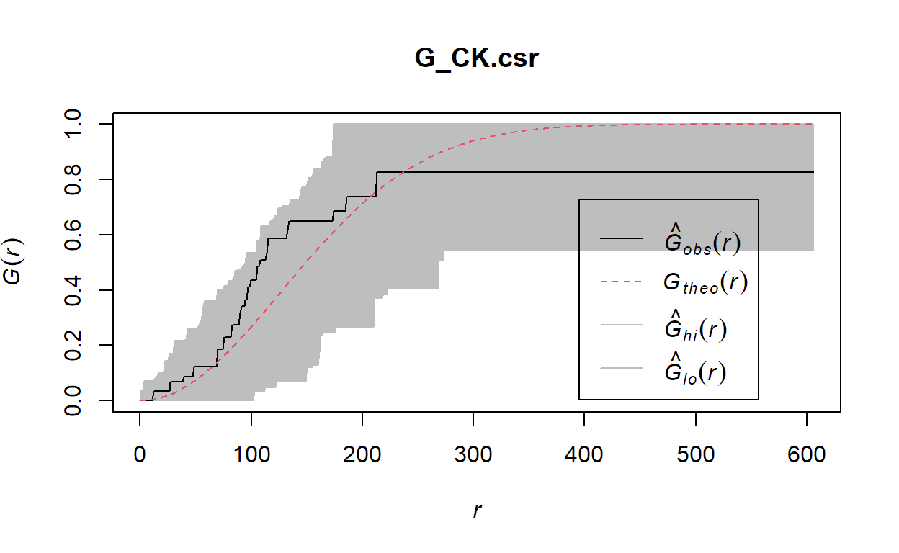
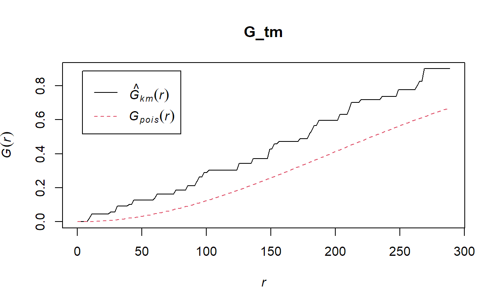
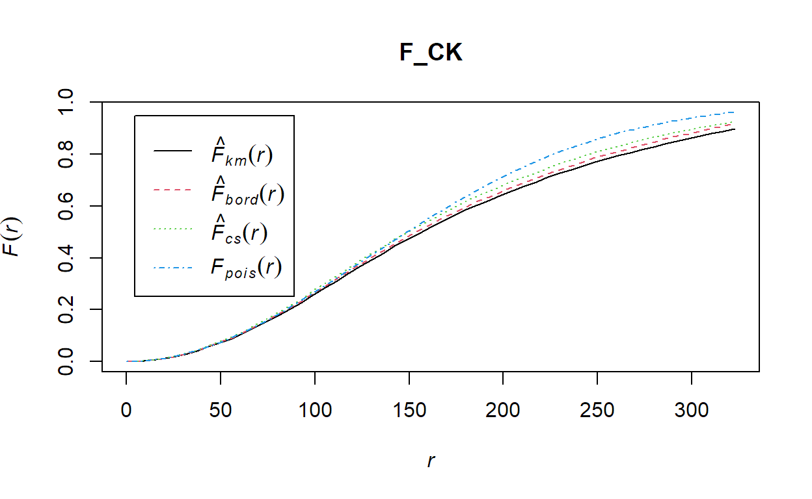
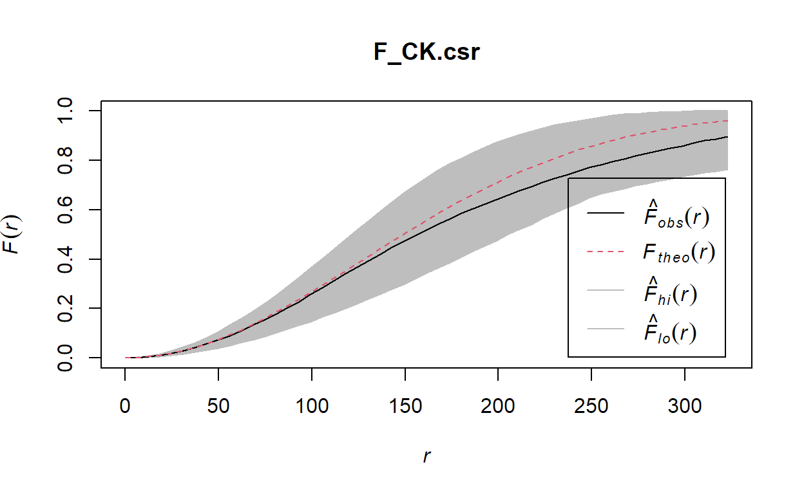
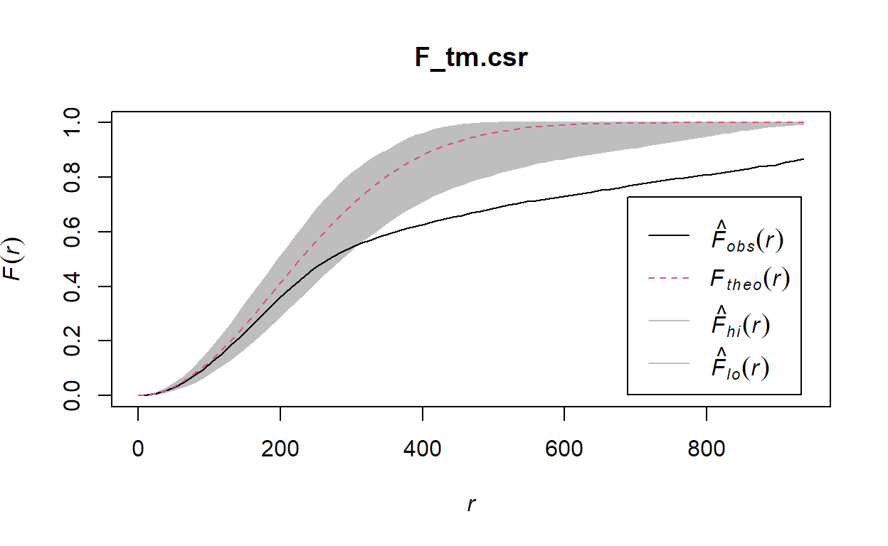
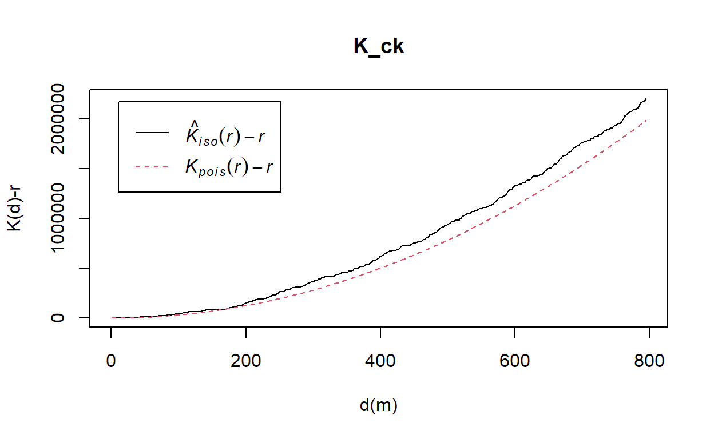
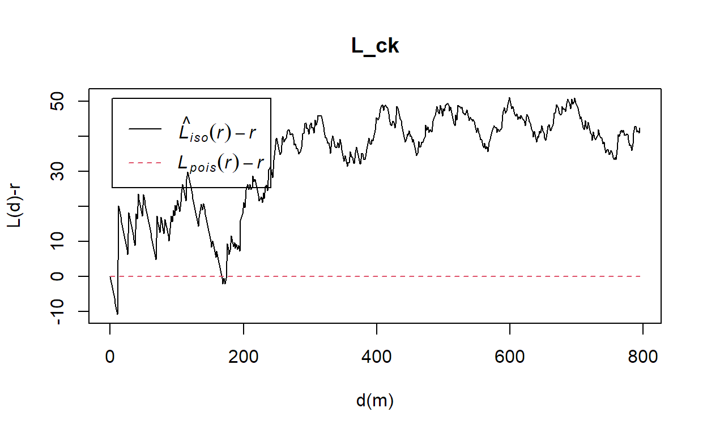
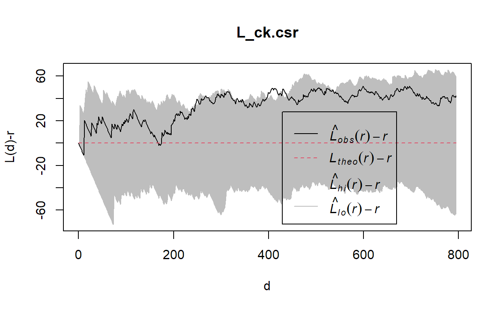
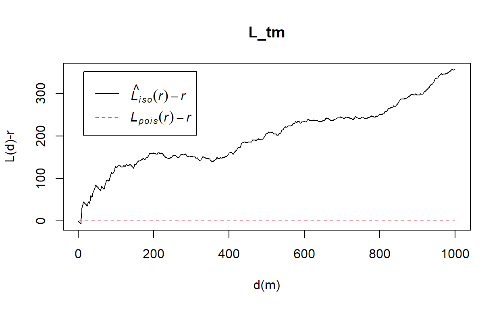

1. Install packages
packages = c('maptools', 'sf', 'raster','spatstat', 'tmap')
for (p in packages){
if(!require(p, character.only = T)){
install.packages(p)
}
library(p,character.only = T)
}
2. Import and transform data
childcare_sf <- st_read("data/child-care-services-geojson.geojson") %>%
st_transform(crs = 3414)
Reading layer `child-care-services-geojson' from data source
`C:\yiling-yu\IS415_Blog\_posts\2021-09-06-hands-on-exercise-4\data\child-care-services-geojson.geojson'
using driver `GeoJSON'
Simple feature collection with 1545 features and 2 fields
Geometry type: POINT
Dimension: XYZ
Bounding box: xmin: 103.6824 ymin: 1.248403 xmax: 103.9897 ymax: 1.462134
z_range: zmin: 0 zmax: 0
Geodetic CRS: WGS 84sg_sf <- st_read(dsn = "data", layer="CostalOutline")
Reading layer `CostalOutline' from data source
`C:\yiling-yu\IS415_Blog\_posts\2021-09-06-hands-on-exercise-4\data'
using driver `ESRI Shapefile'
Simple feature collection with 60 features and 4 fields
Geometry type: POLYGON
Dimension: XY
Bounding box: xmin: 2663.926 ymin: 16357.98 xmax: 56047.79 ymax: 50244.03
Projected CRS: SVY21mpsz_sf <- st_read(dsn = "data",
layer = "MP14_SUBZONE_WEB_PL")
Reading layer `MP14_SUBZONE_WEB_PL' from data source
`C:\yiling-yu\IS415_Blog\_posts\2021-09-06-hands-on-exercise-4\data'
using driver `ESRI Shapefile'
Simple feature collection with 323 features and 15 fields
Geometry type: MULTIPOLYGON
Dimension: XY
Bounding box: xmin: 2667.538 ymin: 15748.72 xmax: 56396.44 ymax: 50256.33
Projected CRS: SVY21sg_sf <- st_set_crs(sg_sf, 3414)
mpsz_sf <- st_set_crs(mpsz_sf, 3414)
st_crs(childcare_sf)
Coordinate Reference System:
User input: EPSG:3414
wkt:
PROJCRS["SVY21 / Singapore TM",
BASEGEOGCRS["SVY21",
DATUM["SVY21",
ELLIPSOID["WGS 84",6378137,298.257223563,
LENGTHUNIT["metre",1]]],
PRIMEM["Greenwich",0,
ANGLEUNIT["degree",0.0174532925199433]],
ID["EPSG",4757]],
CONVERSION["Singapore Transverse Mercator",
METHOD["Transverse Mercator",
ID["EPSG",9807]],
PARAMETER["Latitude of natural origin",1.36666666666667,
ANGLEUNIT["degree",0.0174532925199433],
ID["EPSG",8801]],
PARAMETER["Longitude of natural origin",103.833333333333,
ANGLEUNIT["degree",0.0174532925199433],
ID["EPSG",8802]],
PARAMETER["Scale factor at natural origin",1,
SCALEUNIT["unity",1],
ID["EPSG",8805]],
PARAMETER["False easting",28001.642,
LENGTHUNIT["metre",1],
ID["EPSG",8806]],
PARAMETER["False northing",38744.572,
LENGTHUNIT["metre",1],
ID["EPSG",8807]]],
CS[Cartesian,2],
AXIS["northing (N)",north,
ORDER[1],
LENGTHUNIT["metre",1]],
AXIS["easting (E)",east,
ORDER[2],
LENGTHUNIT["metre",1]],
USAGE[
SCOPE["Cadastre, engineering survey, topographic mapping."],
AREA["Singapore - onshore and offshore."],
BBOX[1.13,103.59,1.47,104.07]],
ID["EPSG",3414]]st_crs(sg_sf)
Coordinate Reference System:
User input: EPSG:3414
wkt:
PROJCRS["SVY21 / Singapore TM",
BASEGEOGCRS["SVY21",
DATUM["SVY21",
ELLIPSOID["WGS 84",6378137,298.257223563,
LENGTHUNIT["metre",1]]],
PRIMEM["Greenwich",0,
ANGLEUNIT["degree",0.0174532925199433]],
ID["EPSG",4757]],
CONVERSION["Singapore Transverse Mercator",
METHOD["Transverse Mercator",
ID["EPSG",9807]],
PARAMETER["Latitude of natural origin",1.36666666666667,
ANGLEUNIT["degree",0.0174532925199433],
ID["EPSG",8801]],
PARAMETER["Longitude of natural origin",103.833333333333,
ANGLEUNIT["degree",0.0174532925199433],
ID["EPSG",8802]],
PARAMETER["Scale factor at natural origin",1,
SCALEUNIT["unity",1],
ID["EPSG",8805]],
PARAMETER["False easting",28001.642,
LENGTHUNIT["metre",1],
ID["EPSG",8806]],
PARAMETER["False northing",38744.572,
LENGTHUNIT["metre",1],
ID["EPSG",8807]]],
CS[Cartesian,2],
AXIS["northing (N)",north,
ORDER[1],
LENGTHUNIT["metre",1]],
AXIS["easting (E)",east,
ORDER[2],
LENGTHUNIT["metre",1]],
USAGE[
SCOPE["Cadastre, engineering survey, topographic mapping."],
AREA["Singapore - onshore and offshore."],
BBOX[1.13,103.59,1.47,104.07]],
ID["EPSG",3414]]st_crs(mpsz_sf)
Coordinate Reference System:
User input: EPSG:3414
wkt:
PROJCRS["SVY21 / Singapore TM",
BASEGEOGCRS["SVY21",
DATUM["SVY21",
ELLIPSOID["WGS 84",6378137,298.257223563,
LENGTHUNIT["metre",1]]],
PRIMEM["Greenwich",0,
ANGLEUNIT["degree",0.0174532925199433]],
ID["EPSG",4757]],
CONVERSION["Singapore Transverse Mercator",
METHOD["Transverse Mercator",
ID["EPSG",9807]],
PARAMETER["Latitude of natural origin",1.36666666666667,
ANGLEUNIT["degree",0.0174532925199433],
ID["EPSG",8801]],
PARAMETER["Longitude of natural origin",103.833333333333,
ANGLEUNIT["degree",0.0174532925199433],
ID["EPSG",8802]],
PARAMETER["Scale factor at natural origin",1,
SCALEUNIT["unity",1],
ID["EPSG",8805]],
PARAMETER["False easting",28001.642,
LENGTHUNIT["metre",1],
ID["EPSG",8806]],
PARAMETER["False northing",38744.572,
LENGTHUNIT["metre",1],
ID["EPSG",8807]]],
CS[Cartesian,2],
AXIS["northing (N)",north,
ORDER[1],
LENGTHUNIT["metre",1]],
AXIS["easting (E)",east,
ORDER[2],
LENGTHUNIT["metre",1]],
USAGE[
SCOPE["Cadastre, engineering survey, topographic mapping."],
AREA["Singapore - onshore and offshore."],
BBOX[1.13,103.59,1.47,104.07]],
ID["EPSG",3414]]#have a glance of the map
tm_shape(mpsz_sf) +
tm_polygons() +
tm_shape(childcare_sf) +
tm_dots()
#tmap_mode('view')
#tm_shape(childcare_sf)+
# tm_dots()
3. Geospatial data wrangling
a. Converting sf data frames to Spatial class
childcare <- as_Spatial(childcare_sf)
mpsz <- as_Spatial(mpsz_sf)
sg <- as_Spatial(st_zm(sg_sf))
summary(childcare)
Object of class SpatialPointsDataFrame
Coordinates:
min max
coords.x1 11203.01 45404.24
coords.x2 25667.60 49300.88
coords.x3 0.00 0.00
Is projected: TRUE
proj4string :
[+proj=tmerc +lat_0=1.36666666666667 +lon_0=103.833333333333
+k=1 +x_0=28001.642 +y_0=38744.572 +ellps=WGS84
+towgs84=0,0,0,0,0,0,0 +units=m +no_defs]
Number of points: 1545
Data attributes:
Name Description
Length:1545 Length:1545
Class :character Class :character
Mode :character Mode :character summary(mpsz)
Object of class SpatialPolygonsDataFrame
Coordinates:
min max
x 2667.538 56396.44
y 15748.721 50256.33
Is projected: TRUE
proj4string :
[+proj=tmerc +lat_0=1.36666666666667 +lon_0=103.833333333333
+k=1 +x_0=28001.642 +y_0=38744.572 +ellps=WGS84
+towgs84=0,0,0,0,0,0,0 +units=m +no_defs]
Data attributes:
OBJECTID SUBZONE_NO SUBZONE_N
Min. : 1.0 Min. : 1.000 Length:323
1st Qu.: 81.5 1st Qu.: 2.000 Class :character
Median :162.0 Median : 4.000 Mode :character
Mean :162.0 Mean : 4.625
3rd Qu.:242.5 3rd Qu.: 6.500
Max. :323.0 Max. :17.000
SUBZONE_C CA_IND PLN_AREA_N
Length:323 Length:323 Length:323
Class :character Class :character Class :character
Mode :character Mode :character Mode :character
PLN_AREA_C REGION_N REGION_C
Length:323 Length:323 Length:323
Class :character Class :character Class :character
Mode :character Mode :character Mode :character
INC_CRC FMEL_UPD_D X_ADDR
Length:323 Min. :2014-12-05 Min. : 5093
Class :character 1st Qu.:2014-12-05 1st Qu.:21864
Mode :character Median :2014-12-05 Median :28465
Mean :2014-12-05 Mean :27257
3rd Qu.:2014-12-05 3rd Qu.:31674
Max. :2014-12-05 Max. :50425
Y_ADDR SHAPE_Leng SHAPE_Area
Min. :19579 Min. : 871.5 Min. : 39438
1st Qu.:31776 1st Qu.: 3709.6 1st Qu.: 628261
Median :35113 Median : 5211.9 Median : 1229894
Mean :36106 Mean : 6524.4 Mean : 2420882
3rd Qu.:39869 3rd Qu.: 6942.6 3rd Qu.: 2106483
Max. :49553 Max. :68083.9 Max. :69748299 summary(sg)
Object of class SpatialPolygonsDataFrame
Coordinates:
min max
x 2663.926 56047.79
y 16357.981 50244.03
Is projected: TRUE
proj4string :
[+proj=tmerc +lat_0=1.36666666666667 +lon_0=103.833333333333
+k=1 +x_0=28001.642 +y_0=38744.572 +ellps=WGS84
+towgs84=0,0,0,0,0,0,0 +units=m +no_defs]
Data attributes:
GDO_GID MSLINK MAPID COSTAL_NAM
Min. : 1.00 Min. : 1.00 Min. :0 Length:60
1st Qu.:15.75 1st Qu.:17.75 1st Qu.:0 Class :character
Median :30.50 Median :33.50 Median :0 Mode :character
Mean :30.50 Mean :33.77 Mean :0
3rd Qu.:45.25 3rd Qu.:49.25 3rd Qu.:0
Max. :60.00 Max. :67.00 Max. :0 b. Converting the Spatial class into generic sp object
childcare_sp <- as(childcare, "SpatialPoints")
sg_sp <- as(sg, "SpatialPolygons")
- generic sp object just preserves the shape of Spatial classes and drops the attribute table
c.Converting the generic sp object into spatstats ppp object
- spatstat requires the analytical data in ppp object form, ppp object is more concise than sps Spatial object
childcare_ppp <- as(childcare_sp, "ppp")
childcare_ppp
Planar point pattern: 1545 points
window: rectangle = [11203.01, 45404.24] x [25667.6, 49300.88] unitsplot(childcare_ppp)
summary(childcare_ppp)
Planar point pattern: 1545 points
Average intensity 1.91145e-06 points per square unit
*Pattern contains duplicated points*
Coordinates are given to 3 decimal places
i.e. rounded to the nearest multiple of 0.001 units
Window: rectangle = [11203.01, 45404.24] x [25667.6, 49300.88] units
(34200 x 23630 units)
Window area = 808287000 square unitsd.Handling duplicated points
- summary(childcare_ppp) warn about duplicates
any(duplicated(childcare_ppp)) #check duplicates
[1] TRUEmultiplicity(childcare_ppp) #count duplicated points
1 2 3 4 5 6 7 8 9 10 11 12 13 14
1 1 1 3 1 1 1 1 2 1 1 1 1 1
15 16 17 18 19 20 21 22 23 24 25 26 27 28
1 1 1 1 1 1 1 1 1 1 1 1 9 1
29 30 31 32 33 34 35 36 37 38 39 40 41 42
1 1 1 1 1 1 1 1 1 1 1 1 1 1
43 44 45 46 47 48 49 50 51 52 53 54 55 56
1 1 1 1 1 1 1 1 1 1 1 1 2 1
57 58 59 60 61 62 63 64 65 66 67 68 69 70
1 3 1 1 1 1 1 1 1 1 1 1 1 2
71 72 73 74 75 76 77 78 79 80 81 82 83 84
1 1 1 1 1 2 1 1 1 1 1 1 1 3
85 86 87 88 89 90 91 92 93 94 95 96 97 98
1 1 1 1 1 1 1 1 1 1 1 1 1 1
99 100 101 102 103 104 105 106 107 108 109 110 111 112
1 1 1 1 1 1 2 1 1 1 1 1 1 1
113 114 115 116 117 118 119 120 121 122 123 124 125 126
1 1 1 1 1 1 2 1 1 1 3 1 1 1
127 128 129 130 131 132 133 134 135 136 137 138 139 140
2 1 1 1 1 1 1 2 1 1 1 1 1 1
141 142 143 144 145 146 147 148 149 150 151 152 153 154
1 1 3 2 1 2 1 1 1 2 2 3 1 5
155 156 157 158 159 160 161 162 163 164 165 166 167 168
1 5 1 1 1 2 1 1 1 1 2 1 1 1
169 170 171 172 173 174 175 176 177 178 179 180 181 182
1 1 1 2 1 1 1 1 1 4 1 1 1 1
183 184 185 186 187 188 189 190 191 192 193 194 195 196
1 1 1 1 1 1 1 1 1 1 1 1 1 1
197 198 199 200 201 202 203 204 205 206 207 208 209 210
1 2 2 1 1 1 1 2 1 4 1 1 2 1
211 212 213 214 215 216 217 218 219 220 221 222 223 224
1 1 1 1 1 1 1 1 1 1 2 1 1 1
225 226 227 228 229 230 231 232 233 234 235 236 237 238
1 1 1 1 1 1 1 1 1 1 1 1 1 1
239 240 241 242 243 244 245 246 247 248 249 250 251 252
1 1 1 1 1 1 2 1 1 1 1 1 1 1
253 254 255 256 257 258 259 260 261 262 263 264 265 266
1 1 1 1 1 1 1 1 1 1 1 1 1 1
267 268 269 270 271 272 273 274 275 276 277 278 279 280
2 1 1 1 1 3 1 1 1 1 1 1 3 1
281 282 283 284 285 286 287 288 289 290 291 292 293 294
1 1 1 1 1 1 1 1 1 1 1 1 1 1
295 296 297 298 299 300 301 302 303 304 305 306 307 308
1 9 1 1 2 1 1 1 1 1 1 1 1 1
309 310 311 312 313 314 315 316 317 318 319 320 321 322
1 1 1 1 1 1 1 1 1 1 1 1 1 1
323 324 325 326 327 328 329 330 331 332 333 334 335 336
1 5 1 1 1 1 1 2 1 1 2 2 1 1
337 338 339 340 341 342 343 344 345 346 347 348 349 350
1 1 1 1 1 1 1 1 1 1 1 1 1 2
351 352 353 354 355 356 357 358 359 360 361 362 363 364
2 1 1 1 1 1 9 1 1 1 1 1 1 1
365 366 367 368 369 370 371 372 373 374 375 376 377 378
1 1 1 1 1 3 1 1 1 1 1 1 1 1
379 380 381 382 383 384 385 386 387 388 389 390 391 392
1 1 1 1 1 1 1 1 1 1 1 1 1 1
393 394 395 396 397 398 399 400 401 402 403 404 405 406
1 1 1 1 1 1 1 1 1 1 2 1 1 1
407 408 409 410 411 412 413 414 415 416 417 418 419 420
1 1 1 1 2 1 1 1 1 1 1 1 1 1
421 422 423 424 425 426 427 428 429 430 431 432 433 434
1 1 1 2 1 1 2 1 1 1 1 1 1 1
435 436 437 438 439 440 441 442 443 444 445 446 447 448
1 1 2 1 1 1 1 1 1 1 1 1 1 1
449 450 451 452 453 454 455 456 457 458 459 460 461 462
1 1 9 9 1 1 1 1 1 1 1 1 1 1
463 464 465 466 467 468 469 470 471 472 473 474 475 476
2 1 2 1 1 1 1 1 1 1 1 1 1 1
477 478 479 480 481 482 483 484 485 486 487 488 489 490
2 2 1 1 1 1 1 1 1 1 1 1 1 1
491 492 493 494 495 496 497 498 499 500 501 502 503 504
1 1 1 1 1 1 1 1 1 1 1 1 2 1
505 506 507 508 509 510 511 512 513 514 515 516 517 518
1 1 1 1 1 1 1 2 1 1 1 1 1 1
519 520 521 522 523 524 525 526 527 528 529 530 531 532
1 1 1 1 1 2 1 1 3 1 1 1 1 1
533 534 535 536 537 538 539 540 541 542 543 544 545 546
1 1 1 1 1 1 1 1 1 1 1 1 1 1
547 548 549 550 551 552 553 554 555 556 557 558 559 560
1 1 1 1 1 1 1 3 1 1 1 1 1 1
561 562 563 564 565 566 567 568 569 570 571 572 573 574
2 2 2 1 1 1 1 2 1 1 2 1 1 1
575 576 577 578 579 580 581 582 583 584 585 586 587 588
2 1 1 2 1 1 1 1 1 9 1 4 1 2
589 590 591 592 593 594 595 596 597 598 599 600 601 602
1 1 1 1 2 1 1 1 1 1 1 1 2 1
603 604 605 606 607 608 609 610 611 612 613 614 615 616
2 1 1 1 1 1 1 1 1 1 1 1 1 1
617 618 619 620 621 622 623 624 625 626 627 628 629 630
1 2 1 2 1 1 1 1 1 1 1 1 1 1
631 632 633 634 635 636 637 638 639 640 641 642 643 644
1 1 1 1 1 1 1 1 1 1 1 1 1 1
645 646 647 648 649 650 651 652 653 654 655 656 657 658
1 1 1 1 1 1 1 1 1 1 1 4 1 1
659 660 661 662 663 664 665 666 667 668 669 670 671 672
1 1 1 1 1 3 1 1 1 1 1 1 1 1
673 674 675 676 677 678 679 680 681 682 683 684 685 686
1 1 1 1 1 4 1 1 1 1 1 4 1 1
687 688 689 690 691 692 693 694 695 696 697 698 699 700
1 1 1 1 1 1 1 1 1 1 1 1 1 1
701 702 703 704 705 706 707 708 709 710 711 712 713 714
1 1 1 1 1 1 2 1 1 1 1 1 1 1
715 716 717 718 719 720 721 722 723 724 725 726 727 728
1 1 1 1 1 1 1 1 1 1 1 1 1 1
729 730 731 732 733 734 735 736 737 738 739 740 741 742
1 1 1 1 1 1 1 1 1 2 1 1 1 1
743 744 745 746 747 748 749 750 751 752 753 754 755 756
1 1 1 1 1 1 1 1 1 1 1 1 1 1
757 758 759 760 761 762 763 764 765 766 767 768 769 770
1 2 1 1 1 1 1 1 1 1 1 1 1 1
771 772 773 774 775 776 777 778 779 780 781 782 783 784
1 1 1 1 1 1 1 4 1 1 1 1 1 1
785 786 787 788 789 790 791 792 793 794 795 796 797 798
1 1 1 1 1 1 1 1 1 1 1 1 1 1
799 800 801 802 803 804 805 806 807 808 809 810 811 812
1 1 1 1 1 1 1 1 1 1 1 1 1 1
813 814 815 816 817 818 819 820 821 822 823 824 825 826
1 1 1 1 1 1 1 1 1 1 1 1 1 1
827 828 829 830 831 832 833 834 835 836 837 838 839 840
1 1 1 1 1 1 1 1 1 1 1 1 1 2
841 842 843 844 845 846 847 848 849 850 851 852 853 854
1 1 1 1 1 1 1 1 1 1 1 1 1 1
855 856 857 858 859 860 861 862 863 864 865 866 867 868
1 1 1 1 1 1 1 1 1 1 1 1 1 1
869 870 871 872 873 874 875 876 877 878 879 880 881 882
1 1 1 1 1 1 1 1 1 1 1 2 3 1
883 884 885 886 887 888 889 890 891 892 893 894 895 896
1 1 2 1 1 1 3 1 1 3 1 1 1 1
897 898 899 900 901 902 903 904 905 906 907 908 909 910
1 1 1 1 1 1 1 1 1 1 1 1 1 1
911 912 913 914 915 916 917 918 919 920 921 922 923 924
1 1 1 1 1 1 1 1 1 1 1 1 1 1
925 926 927 928 929 930 931 932 933 934 935 936 937 938
1 1 1 1 1 1 1 1 1 1 1 1 1 1
939 940 941 942 943 944 945 946 947 948 949 950 951 952
1 1 1 1 1 1 1 1 1 1 1 1 1 1
953 954 955 956 957 958 959 960 961 962 963 964 965 966
1 1 1 1 1 1 1 2 1 1 1 1 1 1
967 968 969 970 971 972 973 974 975 976 977 978 979 980
1 1 1 1 1 1 1 1 1 1 1 1 1 1
981 982 983 984 985 986 987 988 989 990 991 992 993 994
1 1 1 1 1 1 1 1 1 1 1 1 1 1
995 996 997 998 999 1000 1001 1002 1003 1004 1005 1006 1007 1008
1 1 1 1 1 1 1 1 1 1 1 1 1 1
1009 1010 1011 1012 1013 1014 1015 1016 1017 1018 1019 1020 1021 1022
1 1 1 1 1 1 1 1 1 1 1 1 1 1
1023 1024 1025 1026 1027 1028 1029 1030 1031 1032 1033 1034 1035 1036
1 1 1 1 1 1 1 1 1 1 1 1 1 1
1037 1038 1039 1040 1041 1042 1043 1044 1045 1046 1047 1048 1049 1050
1 1 1 1 1 1 1 1 1 1 1 1 1 2
1051 1052 1053 1054 1055 1056 1057 1058 1059 1060 1061 1062 1063 1064
2 1 1 1 1 1 1 1 1 1 1 1 1 1
1065 1066 1067 1068 1069 1070 1071 1072 1073 1074 1075 1076 1077 1078
1 1 1 1 1 1 1 1 1 1 1 1 1 1
1079 1080 1081 1082 1083 1084 1085 1086 1087 1088 1089 1090 1091 1092
1 1 1 1 1 1 1 1 1 1 1 1 1 1
1093 1094 1095 1096 1097 1098 1099 1100 1101 1102 1103 1104 1105 1106
1 1 1 1 1 1 1 1 1 1 1 1 1 1
1107 1108 1109 1110 1111 1112 1113 1114 1115 1116 1117 1118 1119 1120
1 1 1 2 1 1 1 1 1 1 1 1 1 1
1121 1122 1123 1124 1125 1126 1127 1128 1129 1130 1131 1132 1133 1134
1 1 1 1 1 1 1 1 2 2 1 1 1 5
1135 1136 1137 1138 1139 1140 1141 1142 1143 1144 1145 1146 1147 1148
1 1 1 1 1 1 1 1 1 1 1 2 1 1
1149 1150 1151 1152 1153 1154 1155 1156 1157 1158 1159 1160 1161 1162
1 1 1 1 1 1 1 1 1 1 1 1 1 1
1163 1164 1165 1166 1167 1168 1169 1170 1171 1172 1173 1174 1175 1176
2 1 1 1 1 1 1 9 1 2 2 1 1 1
1177 1178 1179 1180 1181 1182 1183 1184 1185 1186 1187 1188 1189 1190
2 1 1 1 1 1 1 1 1 1 1 1 2 1
1191 1192 1193 1194 1195 1196 1197 1198 1199 1200 1201 1202 1203 1204
1 1 3 1 1 1 1 1 1 1 9 1 1 1
1205 1206 1207 1208 1209 1210 1211 1212 1213 1214 1215 1216 1217 1218
1 1 1 1 1 1 1 1 1 1 1 1 1 1
1219 1220 1221 1222 1223 1224 1225 1226 1227 1228 1229 1230 1231 1232
1 2 1 1 1 1 1 1 1 1 1 1 1 1
1233 1234 1235 1236 1237 1238 1239 1240 1241 1242 1243 1244 1245 1246
1 1 1 1 1 1 1 1 1 1 1 1 1 1
1247 1248 1249 1250 1251 1252 1253 1254 1255 1256 1257 1258 1259 1260
1 1 1 1 1 1 1 1 1 1 1 1 1 1
1261 1262 1263 1264 1265 1266 1267 1268 1269 1270 1271 1272 1273 1274
1 1 1 1 1 1 1 1 1 1 1 1 1 1
1275 1276 1277 1278 1279 1280 1281 1282 1283 1284 1285 1286 1287 1288
1 1 1 1 1 1 1 1 1 1 1 1 1 1
1289 1290 1291 1292 1293 1294 1295 1296 1297 1298 1299 1300 1301 1302
1 1 1 1 1 1 1 2 1 1 1 2 1 2
1303 1304 1305 1306 1307 1308 1309 1310 1311 1312 1313 1314 1315 1316
1 1 1 2 2 2 1 1 1 1 1 1 2 1
1317 1318 1319 1320 1321 1322 1323 1324 1325 1326 1327 1328 1329 1330
1 1 1 1 1 1 1 1 2 1 1 1 1 1
1331 1332 1333 1334 1335 1336 1337 1338 1339 1340 1341 1342 1343 1344
1 1 3 1 1 1 1 1 1 1 1 1 1 1
1345 1346 1347 1348 1349 1350 1351 1352 1353 1354 1355 1356 1357 1358
1 1 1 1 1 1 1 1 4 1 1 1 1 1
1359 1360 1361 1362 1363 1364 1365 1366 1367 1368 1369 1370 1371 1372
2 1 1 1 1 1 1 1 1 1 1 1 1 1
1373 1374 1375 1376 1377 1378 1379 1380 1381 1382 1383 1384 1385 1386
1 1 1 1 1 1 1 1 1 1 1 1 1 9
1387 1388 1389 1390 1391 1392 1393 1394 1395 1396 1397 1398 1399 1400
1 1 1 1 1 1 1 1 1 1 1 1 1 1
1401 1402 1403 1404 1405 1406 1407 1408 1409 1410 1411 1412 1413 1414
1 1 1 1 1 1 1 1 1 1 1 1 1 1
1415 1416 1417 1418 1419 1420 1421 1422 1423 1424 1425 1426 1427 1428
1 1 1 1 1 1 1 1 1 1 1 1 1 1
1429 1430 1431 1432 1433 1434 1435 1436 1437 1438 1439 1440 1441 1442
1 1 1 1 1 1 1 1 1 1 2 1 1 2
1443 1444 1445 1446 1447 1448 1449 1450 1451 1452 1453 1454 1455 1456
1 1 1 1 1 1 1 1 1 1 1 1 1 1
1457 1458 1459 1460 1461 1462 1463 1464 1465 1466 1467 1468 1469 1470
1 1 1 1 1 1 1 1 1 1 2 1 1 1
1471 1472 1473 1474 1475 1476 1477 1478 1479 1480 1481 1482 1483 1484
1 1 1 1 1 1 1 1 2 1 1 1 1 1
1485 1486 1487 1488 1489 1490 1491 1492 1493 1494 1495 1496 1497 1498
1 1 1 1 1 1 1 1 1 1 1 1 1 1
1499 1500 1501 1502 1503 1504 1505 1506 1507 1508 1509 1510 1511 1512
5 1 1 1 1 1 1 1 1 1 1 1 1 1
1513 1514 1515 1516 1517 1518 1519 1520 1521 1522 1523 1524 1525 1526
1 1 1 1 1 1 1 1 1 1 1 1 1 2
1527 1528 1529 1530 1531 1532 1533 1534 1535 1536 1537 1538 1539 1540
1 1 1 1 2 1 1 1 1 3 1 1 1 1
1541 1542 1543 1544 1545
1 1 2 1 1 sum(multiplicity(childcare_ppp) > 1) #count no. of locations with duplicated points
[1] 128#view duplicated points
#tmap_mode('view')
#tm_shape(childcare) +
# tm_dots(alpha=0.4,
# size=0.05)
to handle duplicate: jittering, which will add a small perturbation to the duplicate points so that they do not occupy the exact same space.
childcare_ppp_jit <- rjitter(childcare_ppp,
retry=TRUE,
nsim=1,
drop=TRUE)
any(duplicated(childcare_ppp_jit)) #recheck duplicates
[1] FALSEe. Creating owin object
- When analysing spatial point patterns, it is a good practice to confine the analysis with a geographical area like Singapore boundary. In spatstat, an object called owin is specially designed to represent this polygonal region.
covert sg SpatialPolygon object into owin object of spatstat.
sg_owin <- as(sg_sp, "owin")
plot(sg_owin)
summary(sg_owin)
Window: polygonal boundary
60 separate polygons (no holes)
vertices area relative.area
polygon 1 38 1.56140e+04 2.09e-05
polygon 2 735 4.69093e+06 6.27e-03
polygon 3 49 1.66986e+04 2.23e-05
polygon 4 76 3.12332e+05 4.17e-04
polygon 5 5141 6.36179e+08 8.50e-01
polygon 6 42 5.58317e+04 7.46e-05
polygon 7 67 1.31354e+06 1.75e-03
polygon 8 15 4.46420e+03 5.96e-06
polygon 9 14 5.46674e+03 7.30e-06
polygon 10 37 5.26194e+03 7.03e-06
polygon 11 53 3.44003e+04 4.59e-05
polygon 12 74 5.82234e+04 7.78e-05
polygon 13 69 5.63134e+04 7.52e-05
polygon 14 143 1.45139e+05 1.94e-04
polygon 15 165 3.38736e+05 4.52e-04
polygon 16 130 9.40465e+04 1.26e-04
polygon 17 19 1.80977e+03 2.42e-06
polygon 18 16 2.01046e+03 2.69e-06
polygon 19 93 4.30642e+05 5.75e-04
polygon 20 90 4.15092e+05 5.54e-04
polygon 21 721 1.92795e+06 2.57e-03
polygon 22 330 1.11896e+06 1.49e-03
polygon 23 115 9.28394e+05 1.24e-03
polygon 24 37 1.01705e+04 1.36e-05
polygon 25 25 1.66227e+04 2.22e-05
polygon 26 10 2.14507e+03 2.86e-06
polygon 27 190 2.02489e+05 2.70e-04
polygon 28 175 9.25904e+05 1.24e-03
polygon 29 1993 9.99217e+06 1.33e-02
polygon 30 38 2.42492e+04 3.24e-05
polygon 31 24 6.35239e+03 8.48e-06
polygon 32 53 6.35791e+05 8.49e-04
polygon 33 41 1.60161e+04 2.14e-05
polygon 34 22 2.54368e+03 3.40e-06
polygon 35 30 1.08382e+04 1.45e-05
polygon 36 327 2.16921e+06 2.90e-03
polygon 37 111 6.62927e+05 8.85e-04
polygon 38 90 1.15991e+05 1.55e-04
polygon 39 98 6.26829e+04 8.37e-05
polygon 40 415 3.25384e+06 4.35e-03
polygon 41 222 1.51142e+06 2.02e-03
polygon 42 107 6.33039e+05 8.45e-04
polygon 43 7 2.48299e+03 3.32e-06
polygon 44 17 3.28303e+04 4.38e-05
polygon 45 26 8.34758e+03 1.11e-05
polygon 46 177 4.67446e+05 6.24e-04
polygon 47 16 3.19460e+03 4.27e-06
polygon 48 15 4.87296e+03 6.51e-06
polygon 49 66 1.61841e+04 2.16e-05
polygon 50 149 5.63430e+06 7.53e-03
polygon 51 609 2.62570e+07 3.51e-02
polygon 52 8 7.82256e+03 1.04e-05
polygon 53 976 2.33447e+07 3.12e-02
polygon 54 55 8.25379e+04 1.10e-04
polygon 55 976 2.33447e+07 3.12e-02
polygon 56 61 3.33449e+05 4.45e-04
polygon 57 6 1.68410e+04 2.25e-05
polygon 58 4 9.45963e+03 1.26e-05
polygon 59 46 6.99702e+05 9.35e-04
polygon 60 13 7.00873e+04 9.36e-05
enclosing rectangle: [2663.93, 56047.79] x [16357.98, 50244.03] units
(53380 x 33890 units)
Window area = 748741000 square units
Fraction of frame area: 0.414f.Combining point events object and owin object
childcareSG_ppp = childcare_ppp[sg_owin]
summary(childcareSG_ppp)
Planar point pattern: 1545 points
Average intensity 2.063463e-06 points per square unit
*Pattern contains duplicated points*
Coordinates are given to 3 decimal places
i.e. rounded to the nearest multiple of 0.001 units
Window: polygonal boundary
60 separate polygons (no holes)
vertices area relative.area
polygon 1 38 1.56140e+04 2.09e-05
polygon 2 735 4.69093e+06 6.27e-03
polygon 3 49 1.66986e+04 2.23e-05
polygon 4 76 3.12332e+05 4.17e-04
polygon 5 5141 6.36179e+08 8.50e-01
polygon 6 42 5.58317e+04 7.46e-05
polygon 7 67 1.31354e+06 1.75e-03
polygon 8 15 4.46420e+03 5.96e-06
polygon 9 14 5.46674e+03 7.30e-06
polygon 10 37 5.26194e+03 7.03e-06
polygon 11 53 3.44003e+04 4.59e-05
polygon 12 74 5.82234e+04 7.78e-05
polygon 13 69 5.63134e+04 7.52e-05
polygon 14 143 1.45139e+05 1.94e-04
polygon 15 165 3.38736e+05 4.52e-04
polygon 16 130 9.40465e+04 1.26e-04
polygon 17 19 1.80977e+03 2.42e-06
polygon 18 16 2.01046e+03 2.69e-06
polygon 19 93 4.30642e+05 5.75e-04
polygon 20 90 4.15092e+05 5.54e-04
polygon 21 721 1.92795e+06 2.57e-03
polygon 22 330 1.11896e+06 1.49e-03
polygon 23 115 9.28394e+05 1.24e-03
polygon 24 37 1.01705e+04 1.36e-05
polygon 25 25 1.66227e+04 2.22e-05
polygon 26 10 2.14507e+03 2.86e-06
polygon 27 190 2.02489e+05 2.70e-04
polygon 28 175 9.25904e+05 1.24e-03
polygon 29 1993 9.99217e+06 1.33e-02
polygon 30 38 2.42492e+04 3.24e-05
polygon 31 24 6.35239e+03 8.48e-06
polygon 32 53 6.35791e+05 8.49e-04
polygon 33 41 1.60161e+04 2.14e-05
polygon 34 22 2.54368e+03 3.40e-06
polygon 35 30 1.08382e+04 1.45e-05
polygon 36 327 2.16921e+06 2.90e-03
polygon 37 111 6.62927e+05 8.85e-04
polygon 38 90 1.15991e+05 1.55e-04
polygon 39 98 6.26829e+04 8.37e-05
polygon 40 415 3.25384e+06 4.35e-03
polygon 41 222 1.51142e+06 2.02e-03
polygon 42 107 6.33039e+05 8.45e-04
polygon 43 7 2.48299e+03 3.32e-06
polygon 44 17 3.28303e+04 4.38e-05
polygon 45 26 8.34758e+03 1.11e-05
polygon 46 177 4.67446e+05 6.24e-04
polygon 47 16 3.19460e+03 4.27e-06
polygon 48 15 4.87296e+03 6.51e-06
polygon 49 66 1.61841e+04 2.16e-05
polygon 50 149 5.63430e+06 7.53e-03
polygon 51 609 2.62570e+07 3.51e-02
polygon 52 8 7.82256e+03 1.04e-05
polygon 53 976 2.33447e+07 3.12e-02
polygon 54 55 8.25379e+04 1.10e-04
polygon 55 976 2.33447e+07 3.12e-02
polygon 56 61 3.33449e+05 4.45e-04
polygon 57 6 1.68410e+04 2.25e-05
polygon 58 4 9.45963e+03 1.26e-05
polygon 59 46 6.99702e+05 9.35e-04
polygon 60 13 7.00873e+04 9.36e-05
enclosing rectangle: [2663.93, 56047.79] x [16357.98, 50244.03] units
(53380 x 33890 units)
Window area = 748741000 square units
Fraction of frame area: 0.414plot(childcareSG_ppp)
- The output object combined both the point and polygon feature in one ppp object class
4. First-order Spatial Point Patterns Analysis: A. deriving kernel density estimation (KDE) layer for visualising and exploring the intensity of point processes
a. Computing kernel density estimation using automatic bandwidth selection method
- The density values of the output range from 0 to 0.000035 which is way too small to comprehend. This is because the default unit of measurement of svy21 is in meter. As a result, the density values computed is in number of points per square meter.
Note: one can retrieve the bandwidth used to compute the kde layer by using the code chunk below.
bw <- bw.diggle(childcareSG_ppp)
bw
sigma
298.4095 b. Rescale KDE values
Working with different automatic badwidth methods
- Beside bw.diggle(), the automatic bandwidth selection method, there are three other spatstat functions can be used to determine the bandwidth, they are: bw.CvL(), bw.scott(), and bw.ppl().
#take a look at the bandwidth return by these automatic bandwidth calculation methods
bw.CvL(childcareSG_ppp.km)
sigma
4.543278 bw.scott(childcareSG_ppp.km)
sigma.x sigma.y
2.224898 1.450966 bw.ppl(childcareSG_ppp.km)
sigma
0.3897114 bw.diggle(childcareSG_ppp.km)
sigma
0.2984095 - use bw.ppl() when the pattern consists predominantly of tight clusters. use bw.diggle() when purpose of once study is to detect a single tight cluster in the midst of random noise
compare the output of bw.diggle and bw.ppl.
Working with different kernel methods
- By default, the kernel method used in density.ppp() is gaussian. But there are three other options, namely: Epanechnikov, Quartic and Dics.
# compute three more kernel density estimations by using these three kernel function.
par(mfrow=c(2,2))
plot(density(childcareSG_ppp.km,
sigma=bw.ppl,
edge=TRUE,
kernel="gaussian"),
main="Gaussian")
plot(density(childcareSG_ppp.km,
sigma=bw.ppl,
edge=TRUE,
kernel="epanechnikov"),
main="Epanechnikov")
plot(density(childcareSG_ppp.km,
sigma=bw.ppl,
edge=TRUE,
kernel="quartic"),
main="Quartic")
plot(density(childcareSG_ppp.km,
sigma=bw.ppl,
edge=TRUE,
kernel="disc"),
main="Disc")
Fixed and Adaptive KDE
Compute KDE by using fixed bandwidth
#compute a KDE layer by defining a bandwidth of 600 meter. Notice the sigma value used is 0.6. This is because the unit of measurement of childcareSG_ppp.km object is in kilometer, hence the 600m is 0.6km.
kde_childcareSG_600 <- density(childcareSG_ppp.km, sigma=0.6, edge=TRUE, kernel="gaussian")
plot(kde_childcareSG_600)
Compute KDE by using adaptive bandwidth
- Fixed bandwidth method is very sensitive to highly skew distribution of spatial point patterns over geographical units for example urban versus rural. One way to overcome this problem is by using adaptive bandwidth instead.
kde_childcareSG_adaptive <- adaptive.density(childcareSG_ppp.km, method="kernel")
plot(kde_childcareSG_adaptive)
compare the fixed and adaptive kernel density estimation
Convert KDE output into raster
Convert KDE output into grid
gridded_kde_childcareSG_bw <- as.SpatialGridDataFrame.im(kde_childcareSG.bw)
spplot(gridded_kde_childcareSG_bw)
Convert gridded output into raster
kde_childcareSG_bw_raster <- raster(gridded_kde_childcareSG_bw)
kde_childcareSG_bw_raster #look at its property, notice that the crs property is NA.
class : RasterLayer
dimensions : 128, 128, 16384 (nrow, ncol, ncell)
resolution : 0.4170614, 0.2647348 (x, y)
extent : 2.663926, 56.04779, 16.35798, 50.24403 (xmin, xmax, ymin, ymax)
crs : NA
source : memory
names : v
values : -8.476185e-15, 28.51831 (min, max)Assign projection system to raster
projection(kde_childcareSG_bw_raster) <- CRS("+init=EPSG:3414")
kde_childcareSG_bw_raster ##Notice that the crs property is completed.
class : RasterLayer
dimensions : 128, 128, 16384 (nrow, ncol, ncell)
resolution : 0.4170614, 0.2647348 (x, y)
extent : 2.663926, 56.04779, 16.35798, 50.24403 (xmin, xmax, ymin, ymax)
crs : +init=EPSG:3414
source : memory
names : v
values : -8.476185e-15, 28.51831 (min, max)Visualise the raster output in tmap
tm_shape(kde_childcareSG_bw_raster) +
tm_raster("v") +
tm_layout(legend.position = c("right", "bottom"), frame = FALSE)
- Notice that the raster values are encoded explicitly onto the raster pixel using the values in v" field.
Compare Spatial Point Patterns using KDE (Analysis Example)
- In this section, you will learn how to compare KDE of childcare at Ponggol, Tampines, Chua Chu Kang and Jurong West planning areas.
Extract study areas
pg = mpsz[mpsz@data$PLN_AREA_N == "PUNGGOL",]
tm = mpsz[mpsz@data$PLN_AREA_N == "TAMPINES",]
ck = mpsz[mpsz@data$PLN_AREA_N == "CHOA CHU KANG",]
jw = mpsz[mpsz@data$PLN_AREA_N == "JURONG WEST",]
Plot target planning areas
Convert the Spatial polygons data frame into generic spatialpolygons format
pg_sp = as(pg, "SpatialPolygons")
tm_sp = as(tm, "SpatialPolygons")
ck_sp = as(ck, "SpatialPolygons")
jw_sp = as(jw, "SpatialPolygons")
convert these SpatialPolygons objects into owin objects that is required by spatstat
pg_owin = as(pg_sp, "owin")
tm_owin = as(tm_sp, "owin")
ck_owin = as(ck_sp, "owin")
jw_owin = as(jw_sp, "owin")
Combine childcare points and the study areas
childcare_pg_ppp = childcare_ppp_jit[pg_owin]
childcare_tm_ppp = childcare_ppp_jit[tm_owin]
childcare_ck_ppp = childcare_ppp_jit[ck_owin]
childcare_jw_ppp = childcare_ppp_jit[jw_owin]
transform the unit of measurement from metre to kilometre
childcare_pg_ppp.km = rescale(childcare_pg_ppp, 1000, "km")
childcare_tm_ppp.km = rescale(childcare_tm_ppp, 1000, "km")
childcare_ck_ppp.km = rescale(childcare_ck_ppp, 1000, "km")
childcare_jw_ppp.km = rescale(childcare_jw_ppp, 1000, "km")
plot these four study areas and the locations of the childcare centres
par(mfrow=c(2,2))
plot(childcare_pg_ppp.km, main="Punggol")
plot(childcare_tm_ppp.km, main="Tampines")
plot(childcare_ck_ppp.km, main="Choa Chu Kang")
plot(childcare_jw_ppp.km, main="Jurong West")

compute KDE
# bw.diggle method is used
par(mfrow=c(2,2))
plot(density(childcare_pg_ppp.km,
sigma=bw.diggle,
edge=TRUE,
kernel="gaussian"),
main="Punggol")
plot(density(childcare_tm_ppp.km,
sigma=bw.diggle,
edge=TRUE,
kernel="gaussian"),
main="Tempines")
plot(density(childcare_ck_ppp.km,
sigma=bw.diggle,
edge=TRUE,
kernel="gaussian"),
main="Choa Chu Kang")
plot(density(childcare_jw_ppp.km,
sigma=bw.diggle,
edge=TRUE,
kernel="gaussian"),
main="JUrong West")
compute fixed bandwidth KDE
# For comparison purposes, we will use 250m as the bandwidth.
par(mfrow=c(2,2))
plot(density(childcare_ck_ppp.km,
sigma=0.25,
edge=TRUE,
kernel="gaussian"),
main="Chou Chu Kang")
plot(density(childcare_jw_ppp.km,
sigma=0.25,
edge=TRUE,
kernel="gaussian"),
main="JUrong West")
plot(density(childcare_pg_ppp.km,
sigma=0.25,
edge=TRUE,
kernel="gaussian"),
main="Punggol")
plot(density(childcare_tm_ppp.km,
sigma=0.25,
edge=TRUE,
kernel="gaussian"),
main="Tampines")
5. First-order Spatial Point Patterns Analysis: B. perform Confirmatory Spatial Point Patterns Analysis by using Nearest Neighbour statistics
- perform the Clark-Evans test of aggregation for a spatial point pattern
- The test hypotheses are:
- H0 = The distribution of childcare services are randomly distributed.
- H1= The distribution of childcare services are not randomly distributed.
- The 95% confident interval will be used.
Testing spatial point patterns using Clark and Evans Test
clarkevans.test(childcareSG_ppp,
correction="none",
clipregion="sg_owin",
alternative=c("clustered"),
nsim=99)
Clark-Evans test
No edge correction
Monte Carlo test based on 99 simulations of CSR with fixed n
data: childcareSG_ppp
R = 0.54756, p-value = 0.01
alternative hypothesis: clustered (R < 1)Clark and Evans Test: Choa Chu Kang planning area
clarkevans.test(childcare_ck_ppp,
correction="none",
clipregion=NULL,
alternative=c("two.sided"),
nsim=999)
Clark-Evans test
No edge correction
Monte Carlo test based on 999 simulations of CSR with fixed n
data: childcare_ck_ppp
R = 0.94576, p-value = 0.098
alternative hypothesis: two-sidedClark and Evans Test: Tampines planning area
clarkevans.test(childcare_tm_ppp,
correction="none",
clipregion=NULL,
alternative=c("two.sided"),
nsim=999)
Clark-Evans test
No edge correction
Monte Carlo test based on 999 simulations of CSR with fixed n
data: childcare_tm_ppp
R = 0.78815, p-value = 0.002
alternative hypothesis: two-sided6. Second-order Spatial Point Patterns Analysis: A. Analysing Spatial Point Process Using G-Function
- The G function measures the distribution of the distances from an arbitrary event to its nearest event.
Choa Chu Kang planning area G-Function estimation
perform complete spatial randomness test
- To confirm the observed spatial patterns above, a hypothesis test will be conducted. The hypothesis and test are as follows:
- Ho = The distribution of childcare services at Choa Chu Kang are randomly distributed.
- H1= The distribution of childcare services at Choa Chu Kang are not randomly distributed.
- The null hypothesis will be rejected if p-value is smaller than alpha value of 0.001.
Monte Carlo test with G-fucntion
G_CK.csr <- envelope(childcare_ck_ppp, Gest, nsim = 999)
Generating 999 simulations of CSR ...
1, 2, 3, ......10.........20.........30.........40.........50.........60
.........70.........80.........90.........100.........110.........120
.........130.........140.........150.........160.........170.........180
.........190.........200.........210.........220.........230.........240
.........250.........260.........270.........280.........290.........300
.........310.........320.........330.........340.........350.........360
.........370.........380.........390.........400.........410.........420
.........430.........440.........450.........460.........470.........480
.........490.........500.........510.........520.........530.........540
.........550.........560.........570.........580.........590.........600
.........610.........620.........630.........640.........650.........660
.........670.........680.........690.........700.........710.........720
.........730.........740.........750.........760.........770.........780
.........790.........800.........810.........820.........830.........840
.........850.........860.........870.........880.........890.........900
.........910.........920.........930.........940.........950.........960
.........970.........980.........990........ 999.
Done.plot(G_CK.csr)

Tampines planning area G-Function estimation
G_tm = Gest(childcare_tm_ppp, correction = "best")
plot(G_tm)

perform complete spatial randomness test
- To confirm the observed spatial patterns above, a hypothesis test will be conducted. The hypothesis and test are as follows:
- H0 = The distribution of childcare services at Tampines are randomly distributed.
- H1= The distribution of childcare services at Tampines are not randomly distributed.
- The null hypothesis will be rejected is p-value is smaller than alpha value of 0.001.
Monte Carlo test with G-fucntion
G_tm.csr <- envelope(childcare_tm_ppp, Gest, correction = "all", nsim = 999)
Generating 999 simulations of CSR ...
1, 2, 3, ......10.........20.........30.........40.........50.........60
.........70.........80.........90.........100.........110.........120
.........130.........140.........150.........160.........170.........180
.........190.........200.........210.........220.........230.........240
.........250.........260.........270.........280.........290.........300
.........310.........320.........330.........340.........350.........360
.........370.........380.........390.........400.........410.........420
.........430.........440.........450.........460.........470.........480
.........490.........500.........510.........520.........530.........540
.........550.........560.........570.........580.........590.........600
.........610.........620.........630.........640.........650.........660
.........670.........680.........690.........700.........710.........720
.........730.........740.........750.........760.........770.........780
.........790.........800.........810.........820.........830.........840
.........850.........860.........870.........880.........890.........900
.........910.........920.........930.........940.........950.........960
.........970.........980.........990........ 999.
Done.plot(G_tm.csr)

7. Second-order Spatial Point Patterns Analysis: B. Analysing Spatial Point Process Using F-Function
- The F function estimates the empty space function F(r) or its hazard rate h(r) from a point pattern in a window of arbitrary shape.
Choa Chu Kang planning area F-Function estimation
F_CK = Fest(childcare_ck_ppp)
plot(F_CK)

perform complete spatial randomness test
- To confirm the observed spatial patterns above, a hypothesis test will be conducted. The hypothesis and test are as follows:
- H0 = The distribution of childcare services at Choa Chu Kang are randomly distributed.
- H1= The distribution of childcare services at Choa Chu Kang are not randomly distributed.
- The null hypothesis will be rejected if p-value is smaller than alpha value of 0.001.
Monte Carlo test with F-fucntion
F_CK.csr <- envelope(childcare_ck_ppp, Fest, nsim = 999)
Generating 999 simulations of CSR ...
1, 2, 3, ......10.........20.........30.........40.........50.........60
.........70.........80.........90.........100.........110.........120
.........130.........140.........150.........160.........170.........180
.........190.........200.........210.........220.........230.........240
.........250.........260.........270.........280.........290.........300
.........310.........320.........330.........340.........350.........360
.........370.........380.........390.........400.........410.........420
.........430.........440.........450.........460.........470.........480
.........490.........500.........510.........520.........530.........540
.........550.........560.........570.........580.........590.........600
.........610.........620.........630.........640.........650.........660
.........670.........680.........690.........700.........710.........720
.........730.........740.........750.........760.........770.........780
.........790.........800.........810.........820.........830.........840
.........850.........860.........870.........880.........890.........900
.........910.........920.........930.........940.........950.........960
.........970.........980.........990........ 999.
Done.plot(F_CK.csr)

Tampines planning area F-Function estimation
F_tm = Fest(childcare_tm_ppp, correction = "best")
plot(F_tm)
perform complete spatial randomness test
- To confirm the observed spatial patterns above, a hypothesis test will be conducted. The hypothesis and test are as follows:
- H0 = The distribution of childcare services at Tampines are randomly distributed.
- H1= The distribution of childcare services at Tampines are not randomly distributed.
- The null hypothesis will be rejected if p-value is smaller than alpha value of 0.001.
Monte Carlo test with F-fucntion
F_tm.csr <- envelope(childcare_tm_ppp, Fest, correction = "all", nsim = 999)
Generating 999 simulations of CSR ...
1, 2, 3, ......10.........20.........30.........40.........50.........60
.........70.........80.........90.........100.........110.........120
.........130.........140.........150.........160.........170.........180
.........190.........200.........210.........220.........230.........240
.........250.........260.........270.........280.........290.........300
.........310.........320.........330.........340.........350.........360
.........370.........380.........390.........400.........410.........420
.........430.........440.........450.........460.........470.........480
.........490.........500.........510.........520.........530.........540
.........550.........560.........570.........580.........590.........600
.........610.........620.........630.........640.........650.........660
.........670.........680.........690.........700.........710.........720
.........730.........740.........750.........760.........770.........780
.........790.........800.........810.........820.........830.........840
.........850.........860.........870.........880.........890.........900
.........910.........920.........930.........940.........950.........960
.........970.........980.........990........ 999.
Done.plot(F_tm.csr)

8. Second-order Spatial Point Patterns Analysis: C. Analysing Spatial Point Process Using K-Function
- K-function measures the number of events found up to a given distance of any particular event.
Choa Chu Kang planning area K-Function estimation
K_ck = Kest(childcare_ck_ppp, correction = "Ripley")
plot(K_ck, . -r ~ r, ylab= "K(d)-r", xlab = "d(m)")

perform complete spatial randomness test
- To confirm the observed spatial patterns above, a hypothesis test will be conducted. The hypothesis and test are as follows:
- H0 = The distribution of childcare services at Choa Chu Kang are randomly distributed.
- H1= The distribution of childcare services at Choa Chu Kang are not randomly distributed.
- The null hypothesis will be rejected if p-value is smaller than alpha value of 0.001.
Monte Carlo test with K-fucntion
K_ck.csr <- envelope(childcare_ck_ppp, Kest, nsim = 99, rank = 1, glocal=TRUE)
Generating 99 simulations of CSR ...
1, 2, 3, 4, 5, 6, 7, 8, 9, 10, 11, 12, 13, 14, 15, 16, 17, 18, 19, 20, 21, 22, 23, 24, 25, 26, 27, 28, 29, 30, 31, 32, 33, 34, 35,
36, 37, 38, 39, 40, 41, 42, 43, 44, 45, 46, 47, 48, 49, 50, 51, 52, 53, 54, 55, 56, 57, 58, 59, 60, 61, 62, 63, 64, 65, 66, 67, 68, 69, 70,
71, 72, 73, 74, 75, 76, 77, 78, 79, 80, 81, 82, 83, 84, 85, 86, 87, 88, 89, 90, 91, 92, 93, 94, 95, 96, 97, 98, 99.
Done.plot(K_ck.csr, . - r ~ r, xlab="d", ylab="K(d)-r")
Tampines planning area K-Function estimation
perform complete spatial randomness test
- To confirm the observed spatial patterns above, a hypothesis test will be conducted. The hypothesis and test are as follows:
- H0 = The distribution of childcare services at Tampines are randomly distributed.
- H1= The distribution of childcare services at Tampines are not randomly distributed.
- The null hypothesis will be rejected if p-value is smaller than alpha value of 0.001.
Monte Carlo test with K-fucntion
K_tm.csr <- envelope(childcare_tm_ppp, Kest, nsim = 99, rank = 1, glocal=TRUE)
Generating 99 simulations of CSR ...
1, 2, 3, 4, 5, 6, 7, 8, 9, 10, 11, 12, 13, 14, 15, 16, 17, 18, 19, 20, 21, 22, 23, 24, 25, 26, 27, 28, 29, 30, 31, 32, 33, 34, 35,
36, 37, 38, 39, 40, 41, 42, 43, 44, 45, 46, 47, 48, 49, 50, 51, 52, 53, 54, 55, 56, 57, 58, 59, 60, 61, 62, 63, 64, 65, 66, 67, 68, 69, 70,
71, 72, 73, 74, 75, 76, 77, 78, 79, 80, 81, 82, 83, 84, 85, 86, 87, 88, 89, 90, 91, 92, 93, 94, 95, 96, 97, 98, 99.
Done.
9. Second-order Spatial Point Patterns Analysis: D. Analysing Spatial Point Process Using L-Function
Choa Chu Kang planning area L-Function estimation
L_ck = Lest(childcare_ck_ppp, correction = "Ripley")
plot(L_ck, . -r ~ r,
ylab= "L(d)-r", xlab = "d(m)")

perform complete spatial randomness test
- To confirm the observed spatial patterns above, a hypothesis test will be conducted. The hypothesis and test are as follows:
- H0 = The distribution of childcare services at Choa Chu Kang are randomly distributed.
- H1= The distribution of childcare services at Choa Chu Kang are not randomly distributed.
- The null hypothesis will be rejected if p-value is smaller than alpha value of 0.001.
Monte Carlo test with L-fucntion
L_ck.csr <- envelope(childcare_ck_ppp, Lest, nsim = 99, rank = 1, glocal=TRUE)
Generating 99 simulations of CSR ...
1, 2, 3, 4, 5, 6, 7, 8, 9, 10, 11, 12, 13, 14, 15, 16, 17, 18, 19, 20, 21, 22, 23, 24, 25, 26, 27, 28, 29, 30, 31, 32, 33, 34, 35,
36, 37, 38, 39, 40, 41, 42, 43, 44, 45, 46, 47, 48, 49, 50, 51, 52, 53, 54, 55, 56, 57, 58, 59, 60, 61, 62, 63, 64, 65, 66, 67, 68, 69, 70,
71, 72, 73, 74, 75, 76, 77, 78, 79, 80, 81, 82, 83, 84, 85, 86, 87, 88, 89, 90, 91, 92, 93, 94, 95, 96, 97, 98, 99.
Done.plot(L_ck.csr, . - r ~ r, xlab="d", ylab="L(d)-r")

Tampines planning area L-Function estimation
L_tm = Lest(childcare_tm_ppp, correction = "Ripley")
plot(L_tm, . -r ~ r,
ylab= "L(d)-r", xlab = "d(m)",
xlim=c(0,1000))

perform complete spatial randomness test
- To confirm the observed spatial patterns above, a hypothesis test will be conducted. The hypothesis and test are as follows:
- H0 = The distribution of childcare services at Tampines are randomly distributed.
- H1= The distribution of childcare services at Tampines are not randomly distributed.
- The null hypothesis will be rejected if p-value is smaller than alpha value of 0.001.
Monte Carlo test with L-fucntion
L_tm.csr <- envelope(childcare_tm_ppp, Lest, nsim = 99, rank = 1, glocal=TRUE)
Generating 99 simulations of CSR ...
1, 2, 3, 4, 5, 6, 7, 8, 9, 10, 11, 12, 13, 14, 15, 16, 17, 18, 19, 20, 21, 22, 23, 24, 25, 26, 27, 28, 29, 30, 31, 32, 33, 34, 35,
36, 37, 38, 39, 40, 41, 42, 43, 44, 45, 46, 47, 48, 49, 50, 51, 52, 53, 54, 55, 56, 57, 58, 59, 60, 61, 62, 63, 64, 65, 66, 67, 68, 69, 70,
71, 72, 73, 74, 75, 76, 77, 78, 79, 80, 81, 82, 83, 84, 85, 86, 87, 88, 89, 90, 91, 92, 93, 94, 95, 96, 97, 98, 99.
Done.